معماری هیبریدی: بهترینهای هر دو دنیا با Supabase و Spring Boot
منتشر شده در 14 January 2026
بهجای اینکه بین سادگی Supabase و قدرت Spring Boot انتخاب کنید، چرا آنها را ترکیب نکنید؟ معماری هیبریدی را که بهترین ویژگیهای هر فناوری را به کار میگیرد، کشف کنید.
- تیک
-
[]
دیلما دروغ معماری مدرن
هنگامی که یک برنامه مدرن با یک frontend استاتیک ساخته میشود، معمولاً به یک انتخاب باینری (دودویی) مواجه میشویم:
-
همه چیز را بر روی یک راهحل Backend-as-a-Service بگذار(Supabase, Firebase) - ساده اما محدود
-
یک بکاند کامل بسازید(Spring Boot, Node.js) - قوی اما پیچیده
این گزینش یک معضل کاذب است. معماری هیبریدی یک راه سوم پیشنهاد میدهد: استفاده از هر فناوری جایی که بهتر است
دیده معماری
معماری سنتی : تکبلوک
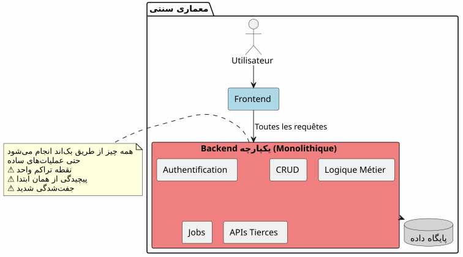
در این رویکرد، حتی عملیات سادهترینها (خواندن یک مقاله، ایجاد یک نظر) باید از طریق بکاند شما عبور کنند. از روز اول هزینهٔ پیچیدگی را میپردازید.
معمار BaaS : herald نماینده
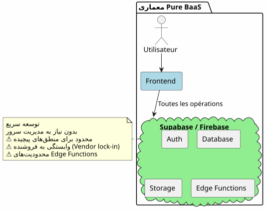
به عکس، واگذاری کامل به یک BaaS در ابتدا جذاب بهنظر میرسد اما هرچون که منطق کسبوکار پیچیده میشود، به سرعت محدودیتهایش آشکار میشود.
معماری هیبریدی : جداسازی مسئولیتها
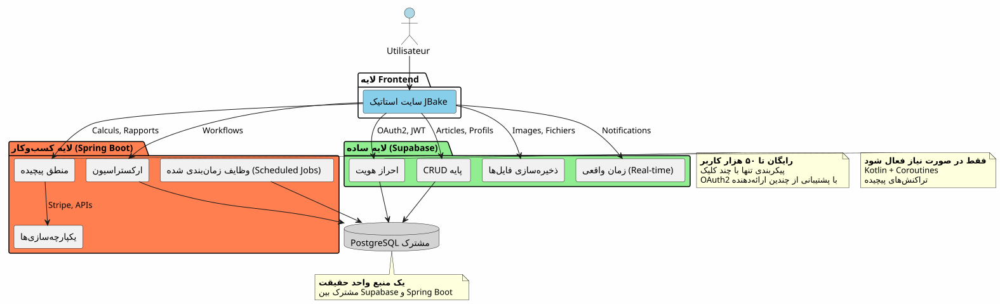
معماری هیبرید مسئولیتها را به صورت واضح بر اساس پیچیدگی و طبیعت عملیاتهای آن جدا میکند.
اصول طراحی
اصل 1: شروع به سادهگی، توسعه هوشمندانه
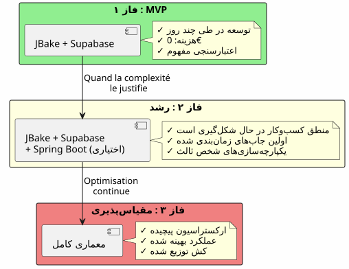
اگر به Spring Boot نیاز ندارید، آن را ساخت نکنید.با Supabase شروع کنید، Spring Boot را وقتی پیچیدگی آن را justified میدانید، اضافه کنید.
مبدأ ۲: جداسازی بر اساس طبیعت عمل

مبدأ ۳: یک منبع حقیقت
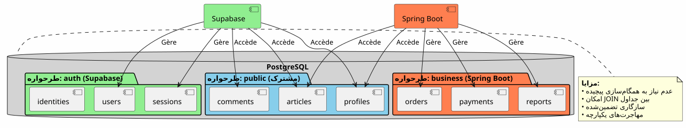
به اشتراکگذاری یک نمونه PostgreSQL، Supabase و Spring Boot بر روی دادههای یکسان کار میکنند بدون نیاز به همگامسازی پیچیده.
ارگسترای جریانها
Flux 1 : احراز هویت مرکزی
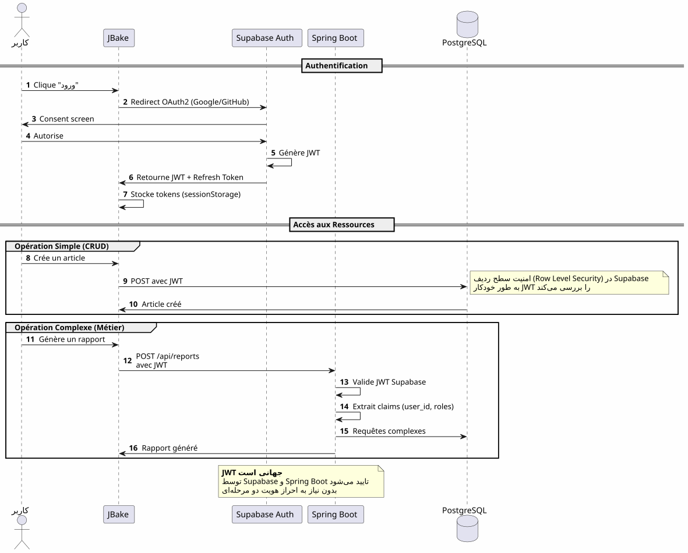
نکته کلید: یک فرآیند احراز هویت، یک JWT، در هر جا قابل استفاده است.
Flux 2: تنظیم یک فرآیند کسب و کار پیچیده
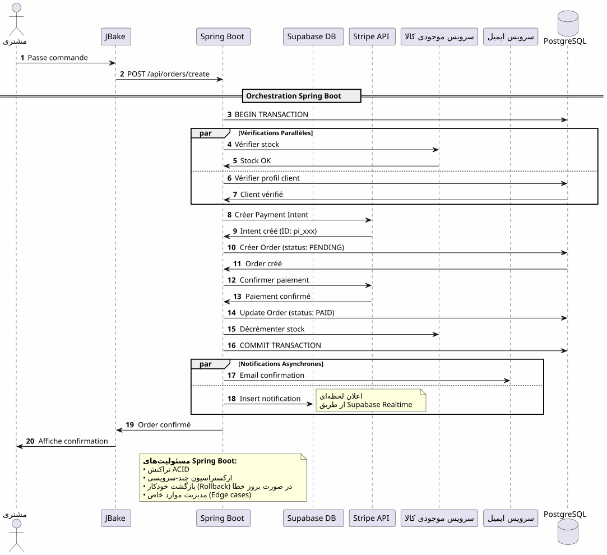
چه چیزی Spring Boot میآوردارکیسترهی قابل اعتماد از فرآیندهای پیچیده شامل چندین سیستم با تضمین تراکنشنی
فلو 3: کارهای برنامهریزیشده و همگامسازیها

چه چیزی Spring Boot میآوردوظائف برنامهریزیشده قابل اعتماد با مدیریت وضعیت، تلاش خودکار و اجرای مضمون
ماتریس تصمیمگیری
Supabase را چه زمانی استفاده کنیم؟

Spring Boot را چه زمانی استفاده کنیم؟

نمونههای معماری بر اساس نوع پروژه
وبلاگ / پرتفلئو
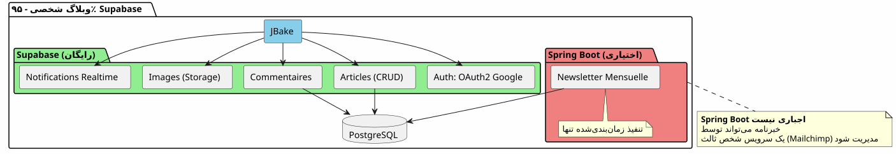
حکم: 100% Supabase بهطور کافی است.
برنامه SaaS
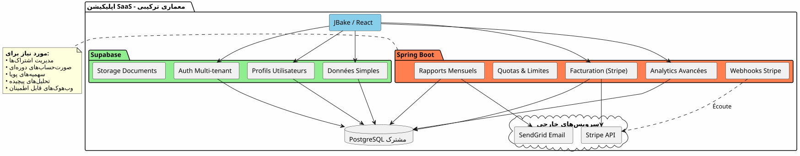
حکم: لازم است معماری هیبرید باشد. Supabase برای بخش اصلی، Spring Boot برای بخش حیاتی (پرداختها، صورتحساب).
تجارت الکترونیک
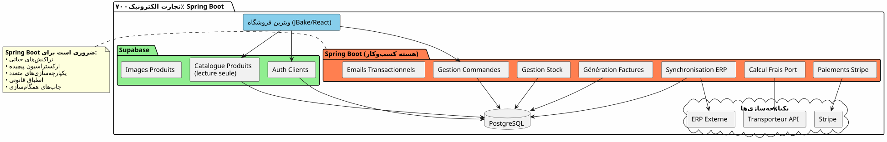
حکم: Spring Boot ضروری است. Supabase فقط برای احراز هویت و فهرست.
استراتژی مهاجرت تدریجی
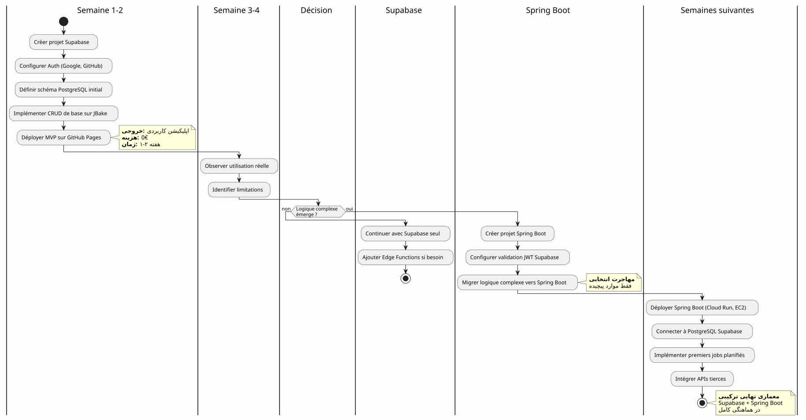
هزینها و ملاحظات عملیاتی
ساختار هزینهها
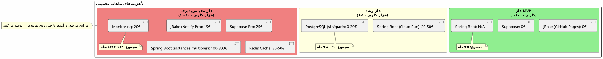
مسئولیتهای عملیاتی
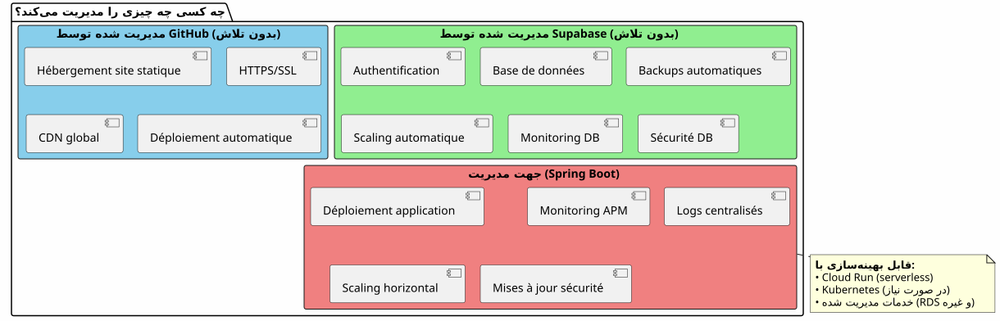
نتیجه : تعادل کامل
معماری هیبریدی Supabase + Spring Boot نه یک تنازل است، این یکهمکاری.
اصول که باید به خاطر سپرد

كي انتخاب این架构؟
این معماری ایدهآل است اگر :
-
میخواهید بهسرعت شروع کنید (MVP بهروز، نه ماه)
-
شما پیشبینی میکنید رشد پیچیدگی کاری
-
شما میخواهید هزینههای اولیه را به حداقل برسانید
-
شما PostgreSQL را دوست دارید و میخواهید منبع یکتا از حقیقت داشته باشید
-
شما Kotlin و Coroutines را برای کد کسبوکار دوست دارید
-
شما میخواهید vendor lock-in کامل را جلوگیری کنید.
❌ این معماری برای این مناسب نیست اگر:
-
پروژه شما ساده است و همچنان ساده خواهد بود (وبلاگ شخصی → 100% Supabase کافی است)
-
شما یک پشته بکاندی (backend) مستقر دارید که آن را تسلط دارید
-
یک منولیت سنتی را ترجیح میدهید
-
شما نیاز دارید به .NET، Python یا یک زبان backend دیگر
دیدان کلی نهایی
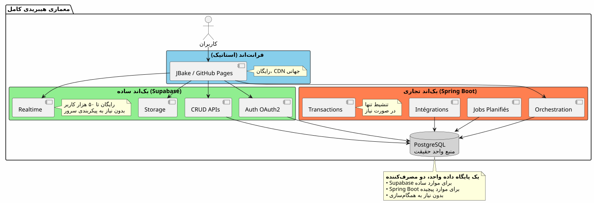
بهترین دو جهان
این معماری شما را میدهد:
🚀 سرعت Supabase
-
شروع به ساعت، نه به هفته
-
احراز هویت OAuth2 در چند کلیک
-
APIهای REST بهصورت خودکار تولید شده
-
پیکربندی صفر سرور
💪 قدرت Spring Boot
-
Kotlin و Coroutines برای کد غیرهمگام زیبا
-
همآهنگسازی فرآیندهای تجاری پیچیده
-
کارهای زمانبندیشده قابل اعتماد
-
تراکنشهای ACID تضمینشده
-
اکوسیستم Spring کامل
💰 اقتصاد پیشرو
-
0€ برای شروع و تأیید
-
هزینهایی که رشد را دنبال میکنند
-
بدون مهندسی پیشزمان بیش از حد
🎯 انعطافپذیری معماری
-
مهاجری تدریجی بدون بازسازی
-
افزودن Spring Boot فقط در صورت لزوم
-
هیچ قفلبهفروشندهی کامل نیست
-
معماری تطبیقی
برای پیشرفت بیشتر
منابع فنی
مستندات Supabase :
مستندات Spring Boot :
مقالات تکمیلی :
-
امنسازی APIها با JWT
-
بهینهسازی عملکرد PostgreSQL
-
الگوهای مهاجرت تدریجی
-
مدیریت خطاها در معماری توزیعشده
موردهای استفاده واقعی
این معماری هیبرید با موفقیت در :
-
SaaS B2B: احراز هویت Supabase، صورتحساب Spring Boot
-
بازارها: کتگ Supabase, تراکنشهای Spring Boot
-
پلتفرمهای محتوا: مقالات Supabase, analytics Spring Boot
-
ابزارهای داخلیCRUD Supabase، گردش کارهای Spring Boot
فهرست راهاندازی
مرحله 1 - مبنا (هفته 1)
-
ایجاد حساب Supabase - [ ] پروژه PostgreSQL را پیکربندی کنید - [ ] فعالسازی احراز هویت (گوگل، گیتهاب) - [ ] تعریف طرح اولیه - [ ] تنظیم Row Level Security - [ ] APIها را از JBake تست کنید
فاز 2 - MVP (هفته 2-3)
-
پیادهسازی صفحات اصلی - [ ] ادغام احراز هویت OAuth2 - [ ] ایجاد فرمهای CRUD - [ ] تنظیم Storage برای فایلها - [ ] قرار دادن روی GitHub Pages - [ ] آزمایش در شرایط واقعی
مرحله 3 - تکامل (بر اساس نیازها)
-
شناسایی نیازهای منطقی پیچیده - [ ] ایجاد پروژه Spring Boot در صورت نیاز - [ ] تنظیم اعتبار JWT Supabase - [ ] متصل کردن به PostgreSQL Supabase - [ ] مهاجرت ویژگیهای پیچیده - [ ] پیادهسازی کارهای زمانبندی شده - [ ] استقرار Spring Boot (Cloud Run، و غیره)
الگوهای ضد که باید اجتناب کرد
❌ نکنید :
-
دادهها بین Supabase و Spring Boot کپی کردن
-
ایجاد دو پایگاه داده PostgreSQL جداگانه
-
خودتان احراز هویت را کد بنویسید
-
استفاده از Spring Boot برای CRUD ساده
-
از ابتدایی بیش از حد معماری کردن
-
Supabase Row Level Security را نادیده بگیرید
بهتر است انجام دهید :
-
یک پایگاه داده PostgreSQL را به اشتراک بگذار
-
Supabase را اجازه دهید که احراز هویت را مدیریت کند
-
استفاده از Spring Boot فقط برای پیچیدگی
-
شروع به سادگی، پیشرفت به تدریج
-
استفاده از نقاط قوت هر فناوری
-
ایمنسازی با RLS در سطح پایگاه donnée
منظورهای تکامل
افزودن توانمندیهای جدید
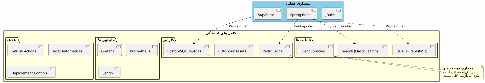
مقیاس افقی
هنگامی که برنامه شما رشد میکند، معماری هیبریدی بهطور خودکار مقیاسپذیر میشود:
Supabase:
-
بهصورت خودکار تا میلیونهای opérations مقیاسپذیر میشود
-
Read replicas برای عملکرد خواندن
-
بازیابی نقطهای برای امنیت
اسپرینگ بوت :
-
چندین نمونه پشت load balancer
-
طراحی بیحالت مقیاسگیری افقی را تسهیل میکند
-
Kubernetes برای orchestretion در صورت نیاز
PostgreSQL :
-
پارتیشنبندی برای جداول حجیم
-
Connection pooling (PgBouncer)
-
شاردینگ واقعاً ضروری (نادر)
گواهینماریهای معماری
استارتاپ SaaS (۵۰هزار کاربر)
_ ما با 100% Supabase شروع کردیم. در 5k کاربر، Spring Boot را صرفاً برای پرداخت Stripe و گزارشهای ماهانه اضافه کردیم. یک سال بعد، 80% از عملیاتهای ما همچنان از طریق Supabase انجام میشود. Spring Boot فقط بخش حیاتی را مدیریت میکند. این جداسازی به ما اجازه داد تا مقیاس کنیم بدون نیاز به بازنویسی. _
پلتفرم E-learning (10k کاربر)
_ احراز هویت OAuth2 Supabase ما را سه هفته زمان توسعه صرفهجویی کرد. APIهای خود تولید شده فهرست دورههای ما را مدیریت میکنند. Spring Boot فقط برای گواهینامههای PDF و ایمیلهای پیشرفت به کار میرود. معماری ساده، قابل حفظ، قابل گسترش. _
B2B مارکتپلیس (3k کاربر)
_ Spring Boot تراکنشها بین خریداران و فروشندگان را مدیریت میکند (مهم). Supabase باقی موارد را مدیریت میکند: پروفایلها، پیامرسانی در زمان واقعی، اسناد. این که آنها پایگاه داده PostgreSQL یکسانی را به اشتراک میگذارند، ما را از هرگونه همگونیسازی پیچیده در امان نگه میدارد. بهترین انتخاب معماری که تا به امروز کردهایم. _
ترکیب: یک پارادایم معماری مدرن
معماری ترکیبی Supabase + Spring Boot یک پارادایم جدید را نشان میدهد :تخصص معماری.
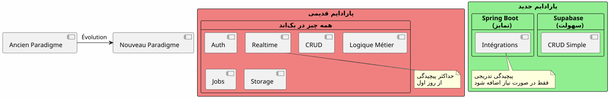
اصول اساسی :نه چیزی که به صورت سرویس وجود دارد را بسازید. به آن چیزی که برنامه شما را متمایز میکند تمرکز کنید.
قانون 80/20
در اکثر برنامهها :
-
80٪ از operacionesCRUD استاندارد هستند → Supabase
-
20% از عملیاتbesoins de la logique métier → Spring Boot
Wait I mistakenly left French? No I need Persian translation. Let’s correct: leading space + "نیاز به منطق کاری دارند" + space + "→" + space + "Spring Boot". So output: " نیاز به منطق کاری دارند → Spring Boot". Ensure no extra spaces at end.
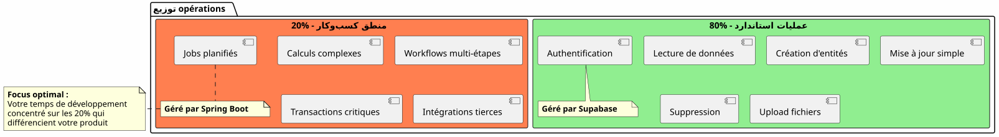
</think>
نیاز به منطق کاری دارند → Spring Boot
این قاعده طبیعی معماری هیبرید را توجیه میکند
نتیجه نهایی
معماری هیبرید یک توافقی فنی نیست، این یکتصمیم استراتژیک۔
شما را اجازه میدهد که :
-
✅ شروع سریع با یک MVP کارآمد
-
✅ تأیید بازار خود بدون سرمایهگذاری سنگین
-
✅ به تدریج پیش بروید وقتی که پیچیدگی این را میطلبد
-
✅ هزینههای خود را در هر مرحله کنترل کنید
-
استفاده از بهترین هر فناوری
-
✅ از پیشانجینری پیشزود خودداری کنید
-
انعطافپذیری را برای آینده حفظ کنید
نماینده است :
-
🎯پراگماتیسم: هر فناوری که در آن برتری دارد
-
🚀سرعت: زمان ورود به بازار کمینه
-
پولاقتصادهزینهها متناسب با ارزش
-
🔮مقیاسپذیری: معماری که با شما رشد میکند
-
🛡️ضبط: خدمات معتبر و قابل اعتماد
گام بعدی شما
-
یک حساب Supabase بسازید(رایگان)
-
طرح دادههای کمینه خود را تعریف کنید
-
احراز هویت OAuth2 را تنظیم کنید
-
ایجاد کنید اولین صفحه JBake شما که از API استفاده می-conductd را
-
در GitHub Pages استقرار دهید
شما یک MVP عملکردی درچند روز.
مقالات مرتبط
31 May 2026